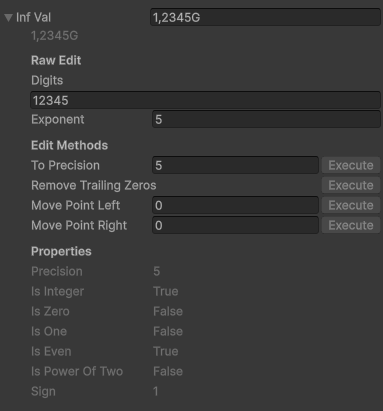
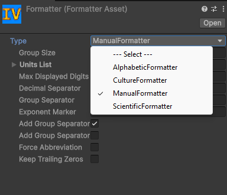
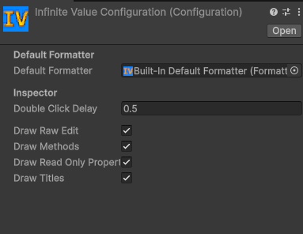
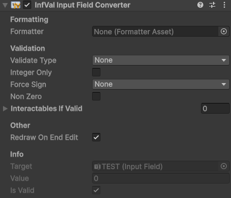
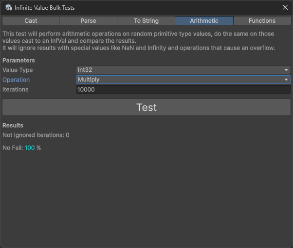
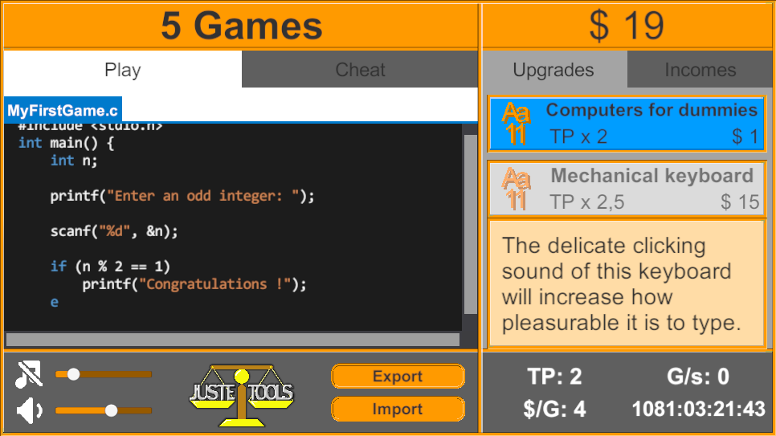

Infinite Value
InfVal
Description
InfVal is the core struct of the asset. It stores two private fields:
a BigInteger for the digits and an int for the exponent.
It is similar to a Java BigDecimal, with an exponent instead of a scale
(exponent = -scale). This lets it represent any integer or floating-point
number with arbitrary precision.
Usage
InfVal is in the InfiniteValue namespace.
using InfiniteValue;
It is a value type (struct) and behaves like int, float, or
Vector3. Assigning it copies the value; operations never modify the original.
InfVal a = 42;
InfVal b = a;
b = b + b; // a is unchanged, b is now 84
It is publicly immutable. You can safely pass it with the in keyword
to avoid a copy.
void Method(in InfVal arg) { ... }Any primitive value type implicitly converts to InfVal. An InfVal can be explicitly cast back to any primitive.
InfVal iv = 1.23f;
float f = (float)iv;For the full list of constructors, operators, methods, and properties, see the Public API.
Inspector
InfVal is serializable. Declare it as a public field
or with [SerializeField] and it appears in the inspector.
Click the arrow or double-click the label to expand the drawer.

- Value field — Shows the formatted value. Edit it and press Enter to set a new value; the text is parsed using the default formatter.
- Raw Edit — Edit the
digitsandexponentdirectly. - Edit Methods — Call
RemoveTrailingZeros,MovePointLeft, orMovePointRightwith one click. - Properties — Read-only display of all public properties. "Undefined" means the property threw an exception (e.g.
isEvenon a floating-point value).
Which sections appear and whether they show titles is configurable in the Configuration asset (see Configuration).
String Representation
Call ToString() with no arguments to format using the project-wide
default formatter from the Configuration asset. Pass a formatter
explicitly to override it for a single call.
InfVal iv = 1234567f;
string s1 = iv.ToString(); // uses Configuration default
string s2 = iv.ToString(myFormatterAsset.formatter); // explicit formatter
For a raw, unformatted representation useful for debugging, use
ToDebugString(). It returns a string in the form (digits, exponent).
InfVal iv = new InfVal(1234.5f, 6);
Debug.Log(iv.ToDebugString());
// output: (123450, -2)Parsing
Two static methods convert a string to an InfVal. Both accept an
optional IInfValFormatter; if omitted, they use the
Configuration default.
InfVal.Parse(string)— Returns the parsed value; throws aFormatExceptionif the string is invalid.InfVal.TryParse(string, out InfVal)— Returnstrueon success,falseon failure; never throws.
InfVal a = InfVal.Parse("1.5k", myFormatter.formatter);
if (InfVal.TryParse("42", out InfVal b))
Debug.Log(b); // 42"123.00" gives digits=12300, exponent=−2, which is more precise
than "123".
Troubleshooting
Division looks like zero
InfVal precision determines how many decimal places a division
result can hold. Integer types now default to their type's maximum digit count
(e.g. 10 for int), so most divisions work as expected. The zero-result
issue typically appears when constructing from a BigInteger without
specifying precision, since the precision then equals the digit count of the value.
// BigInteger.One has 1 digit — no room for the decimal result
Debug.Log(new InfVal(BigInteger.One) / new InfVal(3)); // 0
// int defaults to precision 10 — result fits
Debug.Log(new InfVal(1) / new InfVal(3)); // 0.333333333
// Explicit precision gives exact control
Debug.Log(new InfVal(1, 3) / new InfVal(3)); // 0.33
Arithmetic returns an InfVal with the precision of the
higher-precision operand. Floats default to 9 significant digits, doubles to 17,
decimals to 29. Integer types default to the maximum digit count for the type
(e.g. 10 for int, 19 for long).
Methods seem to have no effect
InfVal is immutable. Methods like ToPrecision return a
new value; they do not modify the original. Always assign the result.
iv.ToPrecision(3); // does nothing
iv = iv.ToPrecision(3); // correctLimits
InfVal is not truly infinite. The practical bounds are approximately ±104 294 967 295, with an epsilon of 10−2 147 483 648 and a maximum precision of 2,147,483,647 digits (reaching it would require several GB of RAM).
Performance
For stable performance, keep precision constant. Set it when creating the value.
InfVal iv = new InfVal(0, 256); // 256-digit precision
iv = new InfVal(0).ToPrecision(256); // equivalent- Cache the
ToString()result and refresh it only when the value changes. - Pass InfVal with the
inkeyword to avoid unnecessary copies. - Call
RemoveTrailingZeros()to reduce digit count without changing the value.
Formatters
All formatting and parsing in Infinite Value goes through the
IInfValFormatter interface. A formatter converts an
InfVal to a string and back. The project-wide default is set in the
Configuration asset and can be overridden per call or per component.
FormatterAsset
A FormatterAsset is a ScriptableObject that wraps any
IInfValFormatter instance so it can be assigned in the inspector and
shared across components.
Create one via Assets > Create > Infinite Value > Formatter, then select a formatter type from the dropdown and configure its fields.

Assign a FormatterAsset to the Default Formatter field
in the Configuration asset, or directly to an
InfValInputField component to override the default for that field.
Built-in Formatters
ManualFormatter
Fully explicit. Configure every detail of how the value is displayed.
groupSize— Digits per unit level and group separator step. Default: 3 (k/M/G style). Use 4 for East Asian style (万/億/兆).unitsList— Suffix list applied at each power step (default: k, M, G, T, P, E, Z, Y).maxDisplayedDigits— Maximum digits in the output (0 means unlimited).decimalSeparator/groupSeparator— Decimal point and thousands separator characters.exponentMarker— Marker for scientific notation (e.g."e").addGroupSeparatorsBeforeDecimalPoint/addGroupSeparatorsAfterDecimalPoint— Toggle thousands separators on each side of the decimal point.forceAbbreviation— Always use a unit suffix or scientific notation, even for small values.keepTrailingZeros— Pad decimals with zeros up tomaxDisplayedDigits.
ScientificFormatter
Always formats as scientific notation (e.g. 1.23e+6). No unit suffixes or group separators.
decimalSeparator,exponentMarker,maxDisplayedDigits,keepTrailingZeros
AlphabeticFormatter
Idle-game style with letter suffixes: 1.23a, 4.56b, ...,
1.00aa, 1.00ab, ... Suffixes are generated from a
configurable alphabet and cached automatically.
alphabet— Source string for generating suffixes (default: a–z).maxDisplayedDigits,decimalSeparator,groupSeparator,keepTrailingZeros
CultureFormatter
Derives separators from a C# CultureInfo. For Japanese, Korean, and
Chinese locales it automatically uses native unit suffixes
(万/億/兆/京, 만/억/조/경, 万/亿/兆) with 4-digit stepping. All other locales use
Western units (k/M/G/...) with 3-digit stepping.
culture— The culture to use (serializable via theCultureclass).maxDisplayedDigits,addGroupSeparatorsBeforeDecimalPoint,addGroupSeparatorsAfterDecimalPoint,keepTrailingZeros
Custom Formatters
Implement IInfValFormatter to build a fully custom formatter. Mark the
class [Serializable] so it can be wrapped in a
FormatterAsset and edited in the inspector.
using System;
using InfiniteValue;
[Serializable]
public class MyFormatter : IInfValFormatter
{
public string Format(in InfVal value) { ... }
public bool TryParse(string text, out InfVal result) { ... }
public bool IsValidPartialInput(string text) { ... }
}
Use the static InfValFormatHelper class for the heavy lifting. It
exposes Format, TryParse, Parse,
IsValidPartialInput, GetDecimalSeparator,
GetGroupSeparator, AreUnitsValid, and
defaultExponentMarkers.
Configuration
The Configuration asset stores the project-wide defaults used by InfVal and the inspector drawer. It is created automatically on the first domain reload if it does not exist.
Open it via Tools > Infinite Value > Configuration, or find the asset at Assets/Resources/Infinite Value Configuration.

Default Formatter
Assign a FormatterAsset here. This formatter is used by
ToString(), Parse(), and TryParse() whenever
no formatter is supplied explicitly. A "Built-In Default Formatter" asset
(CultureFormatter) is assigned automatically when the Configuration is first created.
Inspector Settings
- Double Click Delay — Maximum time in seconds between two clicks to count as a double-click (used to fold/unfold the drawer).
- Draw Raw Edit — Show the Digits and Exponent edit fields.
- Draw Methods — Show the Edit Methods section.
- Draw Read-Only Properties — Show the Properties section.
- Draw Titles — Add a title above each section in the drawer.
Input Field
InfValInputField is a MonoBehaviour that converts a standard Unity
InputField or TMP_InputField into an
InfVal input field.
Create an input field GameObject (right-click > UI > InputField or TextMeshPro - InputField), then attach the component (Add Component > UI > InfVal Input Field Converter).

- Formatter — Optional override. If empty, the Configuration default is used.
- Validate Type — How invalid input is handled:
None,ChangeColor, orDisallowInvalid(blocks characters that would make the input invalid). - Valid / Invalid Color — Colors applied to the text when Validate Type is ChangeColor.
- Integer Only — Treat non-integer values as invalid.
- Force Sign — Restrict to positive or negative values only.
- Non Zero — Treat zero as invalid.
- Interactables If Valid — UI Selectables that are only enabled while the input is valid.
- Redraw On End Edit — Replace the typed text with a clean formatted representation when the user finishes typing.
Scripting members:
value— Get or set the current InfVal.isValid— Whether the current value passes all validation constraints.activeFormatter— The formatter in use (assigned or Configuration default).target— The underlyingInputFieldorTMP_InputField.
Other Classes
MathInfVal
A static class analogous to Mathf, dedicated to InfVal.
Contains more than 30 methods: Abs, Pow, Sqrt,
Log, Min, Max, Clamp,
Approximately, RandomRange, and more. See the
Public API for the full list.
InterpolateInfVal
A static class for interpolating InfVal values. Includes methods
equivalent to Unity's Lerp and SmoothStep, plus additional
interpolation modes. See the Public API.
Culture
A serializable wrapper around CultureInfo, used by
CultureFormatter. Use the .info property wherever a
raw CultureInfo is expected.
Culture c = new Culture(Culture.Type.CurrentCulture);
CultureInfo ci = c.info;Tests
The asset ships with two complementary testing tools.
Bulk Tests
Open the window via Tools > Infinite Value > Bulk Tests. It runs randomized tests across casting, parsing, formatting, arithmetic, and MathInfVal methods, comparing InfVal results against their primitive-type equivalents to catch correctness regressions.

Unit Tests
A NUnit test suite is included and runs via Unity's built-in Test Runner (Window > General > Test Runner, Edit Mode tab). The suite covers:
- InfValPropertiesTests —
precision,isZero,isOne,isInteger,isEven,isPowerOfTwo,sign,digits,exponent. - InfValComparisonTests — All six comparison operators and
CompareTo. - InfValArithmeticTests — Every arithmetic, bitwise, and shift operator.
- InfValMethodsTests —
ToPrecision,ToExponent,RemoveTrailingZeros,MovePointLeft/Right,Deconstruct. - InfValCastTests — Round-trip casts for all integer types,
BigInteger,float, anddouble. - InfValParseTests —
InfValFormatHelper.TryParsewith known strings. - FormatterTests — Formatting output for all built-in formatters.
- MathInfValTests — Every
MathInfValmethod.
Run both tools after modifying any scripts to catch regressions.
Demo
The package includes a full clicker-game demo that showcases InfVal in action. It features a save system, a scriptable-object database, a simple audio system, and several reusable UI scripts.

Use the demo as a reference or as a starting point for your own idle/clicker game. If you do not need it, delete the Demo folder to remove unused assets from your project.
Author & Contact
Created by Juste Tools.
- Website: justetools.com
- Other assets: assetstore.unity.com/publishers/52427
For bugs or questions: justetools@gmail.com